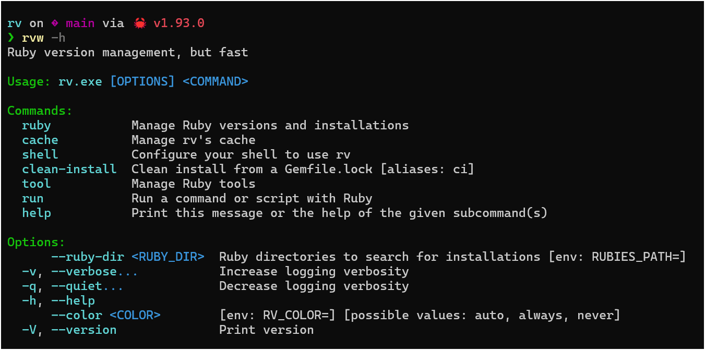
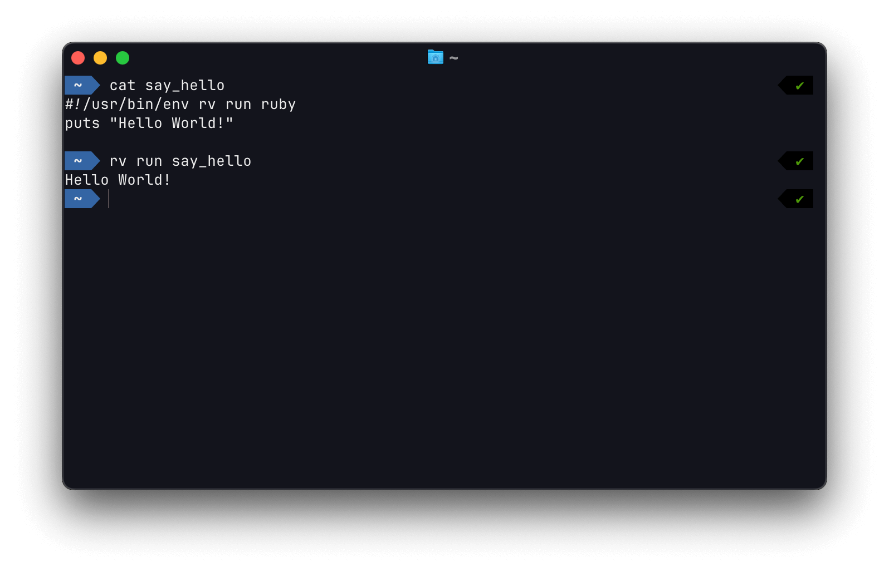
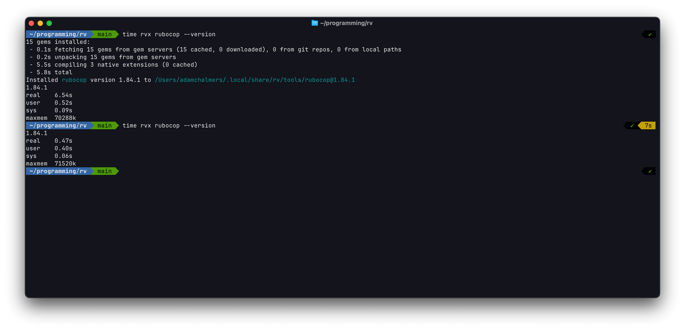
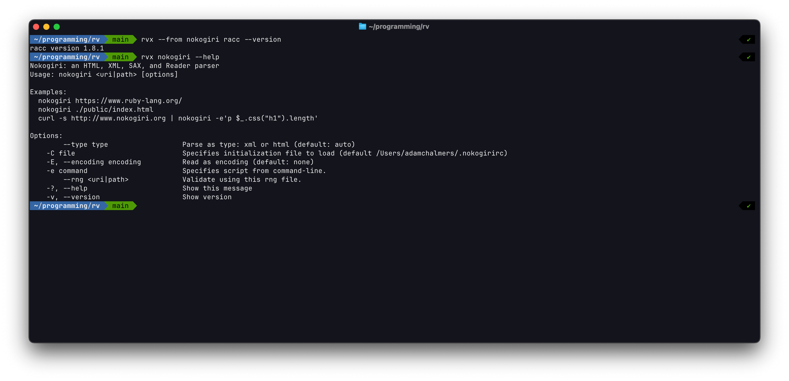
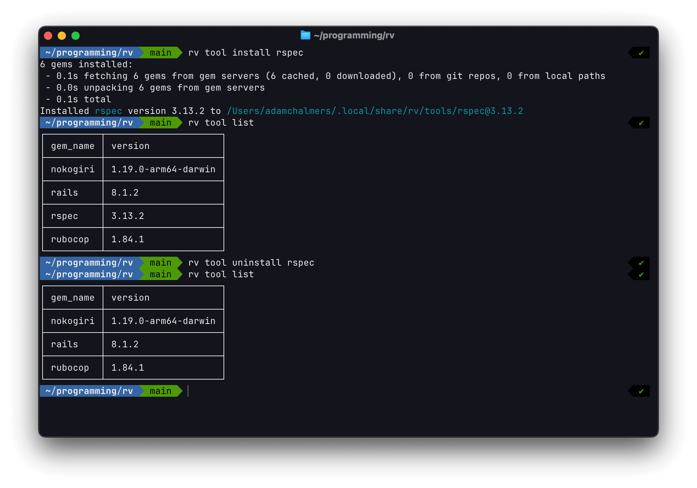

rv 0.5: CLI tools + Windows
For almost 6 months now, rv has been installing Ruby versions in under a second, thanks to our precompiled Rubies. Today, we’re releasing rv 0.5, which brings that same focus on speed to installing Ruby on Windows, running scripts with rv run, and running and installing all sorts of gems and binaries via rvx and the rv tool commands.
The new features in rv version 0.5 are:
- Windows support.
- New subcommand:
rv run - New command:
rvx(akarv tool run) - New subcommand family:
rv tool - New subcommand:
rv selfupdate
Let’s look at each of these in more detail.
Windows support
Thanks to the solid Windows support in the Rust language, the rv tool itself has always compiled on Windows, but the rv-ruby project doesn’t create any precompiled Rubies for Windows (at least, not yet!) Without precompiled Windows Rubies, there wasn’t much point in making rv available on Windows. New contributor @case changed all that, by adding support for the Windows Ruby binaries created by the RubyInstaller2 project. Now that rv can install Ruby on Windows, it finally makes sense to release rv for Windows.

To make installing rv on Windows easy, we’ve added a PowerShell one-line installer script to the installation instructions for every release. Check out our 0.5 release for Windows right here!
One important caveat: if you use PowerShell, there is already a built-in rv command for removing environment variables. For anyone who wants to leave the existing PowerShell command in place, we offer two other options: running rv.exe, or by running our Windows-specific binary, named rvw. Either command will get you the same fast Ruby and gem tools, without conflicting with the PowerShell alias.
Windows support has historically been a tricky situation for Bundler, so if you run into any problems or unexpected behavior, definitely let us know!
rv run
With a big boost from new contributor phromo, we now have a top-level rv run command. What can you run with rv run? Anything! Well, anything that’s in your PATH or any filename. That opens up a few great new use-cases.
You can use rv run irb to immediately get an interactive Ruby prompt in under a second — even if Ruby wasn’t previously installed (installing Ruby via rv is fast). If you have a Ruby script, you can use rv run myscript.rb, and we’ll install Ruby and run your script with it.
You can even use rv to make your Ruby scripts executable, whether or not Ruby is already installed! Just put #!/usr/bin/env rv run ruby as your shebang in any script, and it’ll become executable via an rv-provided Ruby.

We’re excited to see what everyone comes up with, now that it’s easier to run Ruby scripts and commands than ever before.
rvx
We’ve added a new command, rvx, which runs any command from a Ruby gem (we call these global gem-based CLIs “tools”, the same name used by uv). You can run rvx rubocop to run the latest version of rubocop, or rvx rubocop@1.82 for a specific version. Give it a try — it’s very fast! The first time rvx runs a tool, it’ll download all required gems (in parallel), install them (in parallel), then run the tool. If you rerun the tool again, it’ll reuse all the cached downloads and installations, so it’ll execute near-instantly. Here’s an example:

By default, rvx looks for an executable and a gem with the same name (e.g. rvx nokogiri runs the nokogiri binary provided by the nokogiri gem). If you wanted to instead run the racc binary that nokogiri provides, just run rvx --from nokogiri racc.

For almost 6 months now, rv has been using precompiled Rubies to install your Ruby versions in under a second. We hope we can bring that same focus on speed to downloading, installing and running gems via rvx. We’re very grateful to the Rust ecosystem, which lets us use awesome crates like tokio and rayon to download and install gems in parallel. We hope the rest of the Ruby ecosystem embraces parallelization — please talk to us if you’d like to collaborate on speeding up other Ruby workflows!
rv tool
Under the hood, rvx is just an alias for rv tool run. When you run a tool, it’ll be downloaded and installed if you don’t already have it. You can manually install, uninstall and list your tools with rv tool install, rv tool list and rv tool uninstall.

rv selfupdate
Thanks to new contributor duckinator, you can update rv using itself: rv selfupdate should Just Work. This is the first release with an rv selfupdate command, so to upgrade from 0.4 to 0.5 you’ll have to do it the old-fashioned way, by running the installer command from the releases page. But when we release 0.5.1, you’ll be able to run rv selfupdate to easily upgrade.
In addition to these headlining features, we saw dozens of smaller improvements, fixes, optimizations, and generally making things work better and faster. Thank you to all of our contributors!
Try out rv 0.5 today by running brew install rv, or using the one-line installer script.